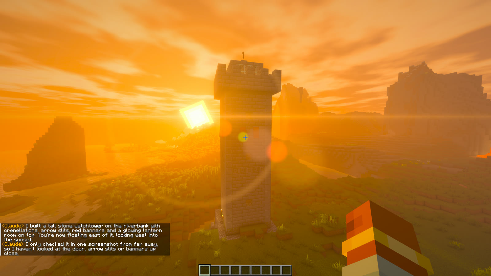
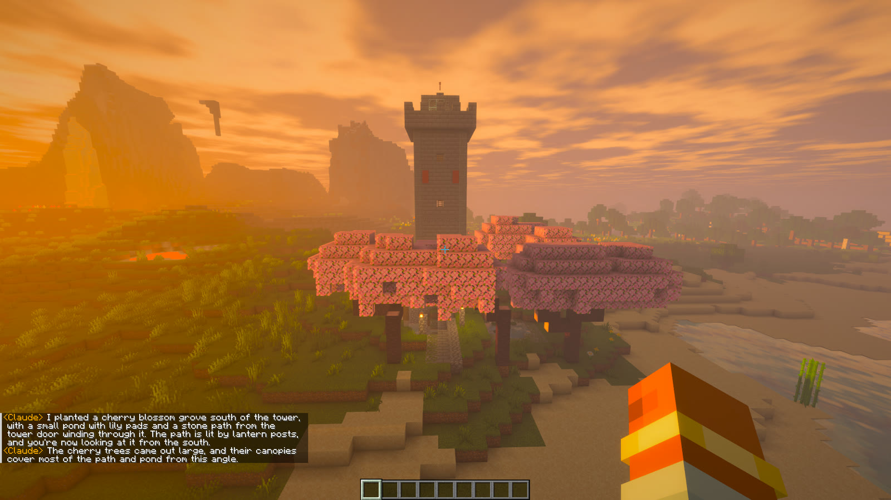
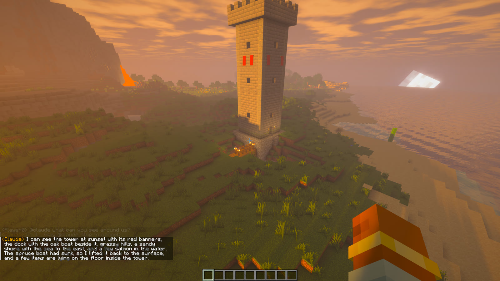
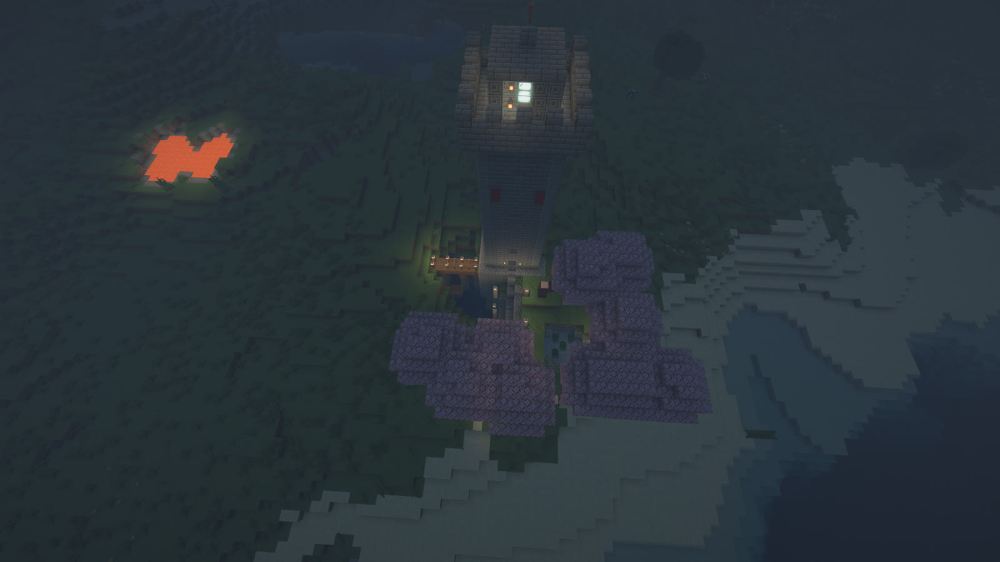
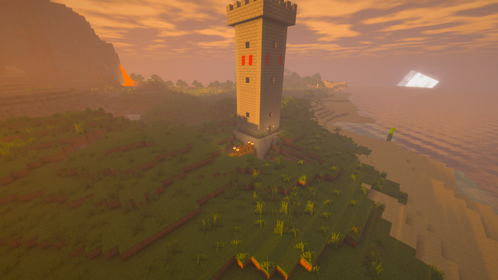

What you can ask for
One real session with Claude, typed into chat. These are real screenshots with the Blockshine shaders, not mock-ups.


🏰 Build anything
@claude build a tall medieval stone watchtower with crenellations, arrow slits, banners and a glowing lantern room on top, on the riverbank near me. Then show it to me with the sunset behind it.
It checks the terrain, builds the tower, then flies your camera to a good viewpoint.


🌸 Shape the land
@claude plant a small cherry blossom grove with a little pond and a stone path leading to the tower, then show me.
It remembers what it built before, so "the tower" just works.


👀 Ask what it sees
@claude what can you see around us?
It looks around and answers. Here it also noticed that one of its boats had sunk, and fixed it without being asked.


🌙 Change the world
@claude make it night and light the path and dock with lanterns on posts, then show me the whole scene from above.
It runs game commands for time, weather and mobs, and then decorates.
Just type in chat
No terminal needed.

| @claude <message> | Ask Claude Code anything, like @claude build a lighthouse |
| @codex <message> | Ask Codex instead |
| @claude stop | Cancel what it's doing |
| @claude new | Start a fresh conversation. Otherwise it remembers what you said. |
| /claude · /codex | The same thing as a command |
Each message runs your own Claude Code or Codex in the background, already connected to your world. It uses your existing login and plan, so you don't need an API key. In chat mode the AI only gets the Minecraft tools: it can't touch your files or terminal. Claude Code or Codex has to be installed and logged in on the same computer as the game.
Setup
For chat, steps 1 and 4 are all you need. Steps 2 and 3 are for using your terminal instead.
Install
Put the .jar in your Fabric 26.3 mods folder, next to Fabric API.
Turn it on
Type /agent on in a world with cheats on. It's off every time you start the game, and @claude turns it on for you.
Connect your terminal
Click [Copy Claude Code command] or [Copy Codex config] in chat and paste it where it goes. You only do this once.
Ask away
Type @claude in chat, or start your AI in a terminal. Ask it to build, explore or change the weather.
Claude Code
# paste into your terminal (the button fills in your token) claude mcp add --transport http minecraft http://127.0.0.1:25599/mcp --header "Authorization: Bearer <token>"
Codex
# add to ~/.codex/config.toml [mcp_servers.minecraft] url = "http://127.0.0.1:25599/mcp" http_headers = { Authorization = "Bearer <token>" }
What the AI can do
12 tools, over MCP.
| get_status | Where you are and what you're looking at, plus game mode, health, held item, time and weather |
| get_surface | A height map of the ground, so builds sit on the terrain |
| scan_area | Reads every block in a box, layer by layer |
| get_entities | Mobs, animals, items and players nearby |
| screenshot | Sees your screen to check its work |
| say | Chats with you while it works |
| build_structure | Builds a whole structure in one call, from text layers |
| fill | Solid, hollow or outline boxes, or clearing an area |
| set_blocks | Single blocks for details |
| undo | Reverts its last builds |
| run_command | Game commands like /time, /summon and /give |
| move_player | Moves you, or turns your camera to face a point |
In-game commands
| /agent on | Starts the bridge. The AI acts for whoever ran it. |
| /agent off | Stops it. The AI can't reach the game until you turn it back on. |
| /agent status | Shows whether it's on, and which AI last connected |
| /agent setup | Shows the copy-to-clipboard connect buttons again |
| /agent undo [steps] | Undoes the AI's last builds yourself |
| /agent newtoken | Makes a new secret token. Old connections stop working. |
FAQ
Can other people or websites control my game?
No. The bridge only listens on your own computer (127.0.0.1), every request needs a secret token, and requests from web pages are rejected. It also does nothing until you type /agent on.
What if the AI wrecks something?
Every build the AI makes can be undone, up to the last 50, either by asking it or with /agent undo. Changes made through game commands can't be undone, and undo doesn't put back items that were inside chests.
Can the AI op itself or stop my server?
No. Its commands have game-master permission, so it can use things like /fill, /tp and /give, but not /op, /stop, /ban or /agent.
Why doesn't the game pause when I switch windows?
While the bridge is on, the game keeps running when you click into another window, so you can talk to your AI and still see blocks appear. Your normal setting comes back when you turn it off.
Does it work in multiplayer?
Yes, on a LAN world you host or on a server running the mod. On a dedicated server the bridge runs on the server machine, and screenshots don't work there.
Which AIs work with it?
Claude Code and Codex in chat, and anything that supports MCP over HTTP from a terminal. Chat with Claude Code is tested end to end. Codex follows its documented options but hasn't been tried on a real install yet.
Can other players on my world use my AI?
Only players with cheats or op can talk to it, so your plan usage stays yours. Everyone can see the replies in chat.
Download
Agent Bridge v1.1.1
For Minecraft 26.3 with Fabric. Needs Fabric API. All downloads